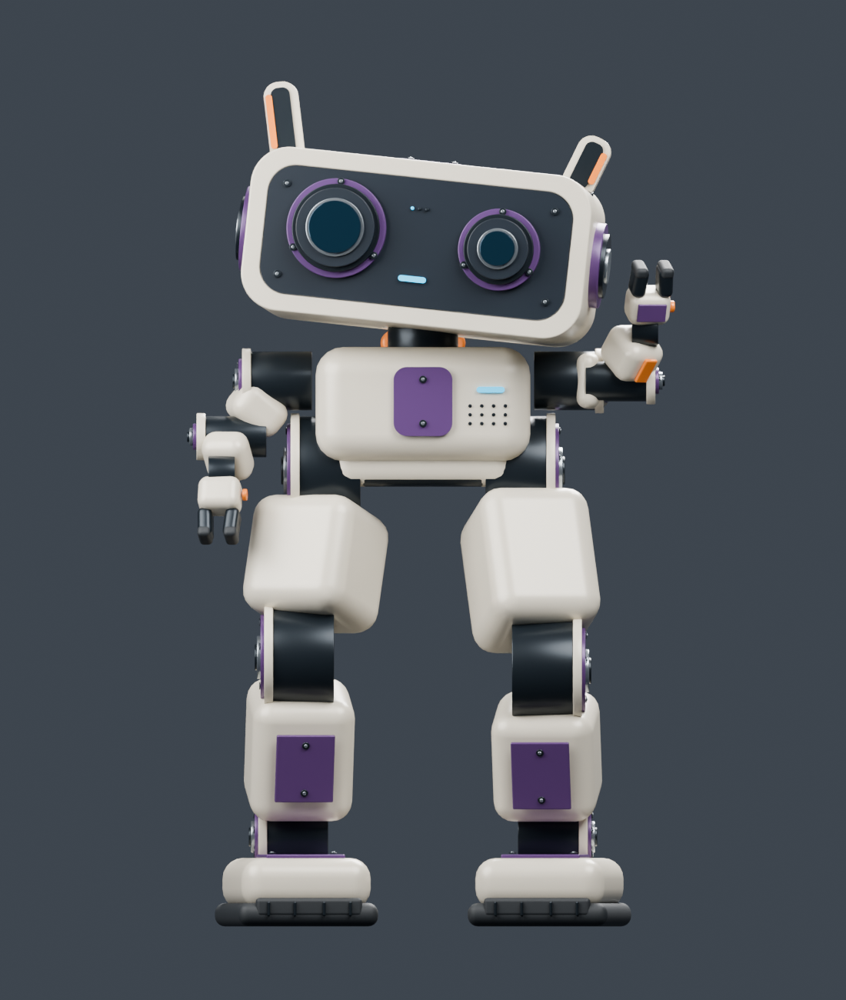
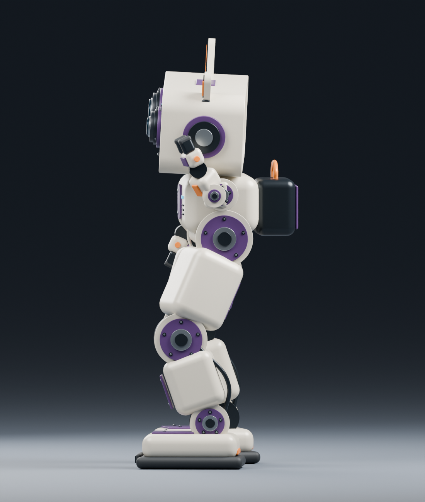
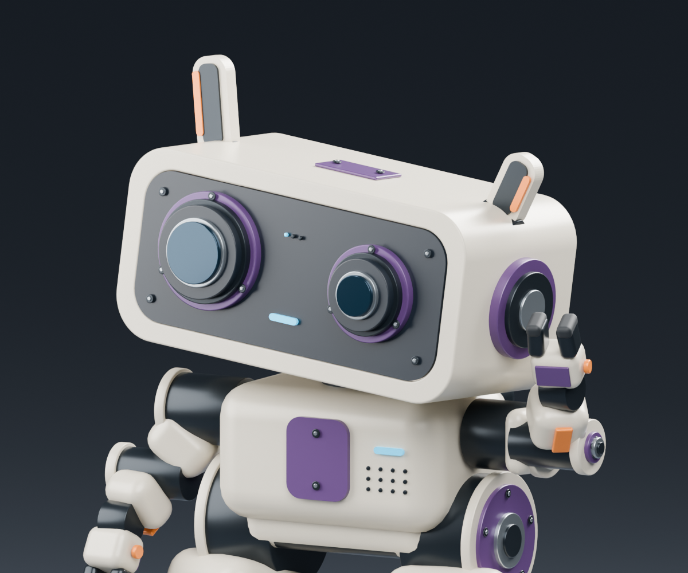

Rev B · BDX-inspired proportions. Bigger bent legs, a short rounded body, little two-finger arms and an inquisitive head.

Front · Broad leg volumes and small arms frame the large, tilted face. Unequal eyes and ears give it an attentive expression.

Side · Deeper knee bends, staggered feet and a compact rear pack. This is a posed design illustration, not a demonstrated balanced stance.

Head detail · A gentle idle head gesture is included on the Blender timeline, frames 1–73.
About 575 mm tall in this pose; the illustrated head gesture stays below 580 mm. Mechanical-layout concept: the new proportions need repackaging and mechanism validation before printable production parts. Rev A is preserved.